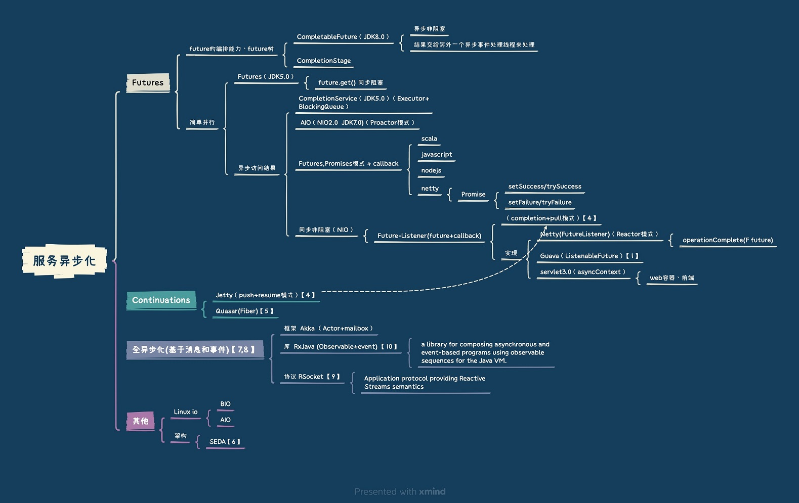
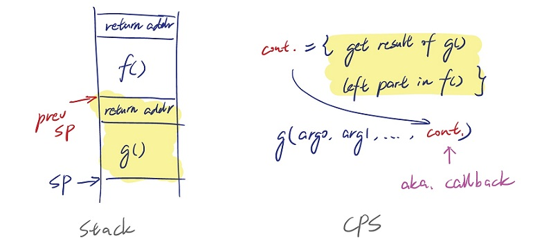

异步编程范式-Callback [0] #
Continuation == 回调函数 #
- 编程模式 Continuation-passing style（CPS）
- 把调用者 f() 还未执行的部分包成一个函数对象 cont，一同传给被调用者 g()；
- 正常运行 g() 函数体；
- g() 完成后，连同它的结果一起回调 cont，从而继续执行 f() 里剩余的代码。

Callback实现 #
而异步 IO 中，进程发起 IO 操作时也会一并输入回调（也就是 Continuation），这大大解放了生产力 —— 现场无需等待，可以立即返回去做其他事情。一旦 IO 成功后，AIO 的 Event Loop 会调用刚刚设置的回调函数，把剩下的工作完成。这种模式有时也被称为 Fire and Forget。 通过实现的 Continuation，线程不再受 IO 阻塞，可以自由自在地跑满 CPU。
Callback语法糖：Promise #
Promise 是对异步调用结果的一个封装，在 Java 中它叫作 CompletableFuture 或者 ListenableFuture (Guava)。 Promise 改善了 Callback 的可读性，也让异常处理稍稍优雅了些。
反应式编程(Promise 的极大增强) #
相比 Promise，反应式引入了流（Flow）的概念。
异步编程范式- Coroutine [0] #
CPS 变换：Coroutine 与 async/await #
在异步函数调用时加上 await，编译器就会自动把它转化为协程（Coroutine），而非昂贵的线程。
用户态线程 #
goroutine
并行 范式/编程模型 #
| 并行 范式/编程模型 | 系统/语言 |
|---|---|
| 线程和锁 | Java |
| 函数式(Future，Promise） | Java8 Streaming API, lambda表达式 Spark/Flink 算子 Clojure reducer |
| 分离标识和状态 | Clojure |
| Actor | Scala Actor, Akka |
| CSP | Golang协程, Kotlin协程 |
| Reactive | RxJava Flux (Reactor Core) RSocket |
参考 #
- 异步编程的几种方式 ***
- google Guava包的ListenableFuture解析 罗立树
- 谈谈服务化体系中的异步（上） 花钱的年华
- 苏宁 11.11：如何基于异步化打造会员任务平台？-基于异步化的性能优化实践 葛苏杰
- Web服务请求异步化介绍（概念篇） 放翁（文初） ***
- Java中的纤程库 - Quasar 鸟窝
- SEDA: An Architecture for Well-Conditioned, Scalable Internet Services
- 《七周七并发》